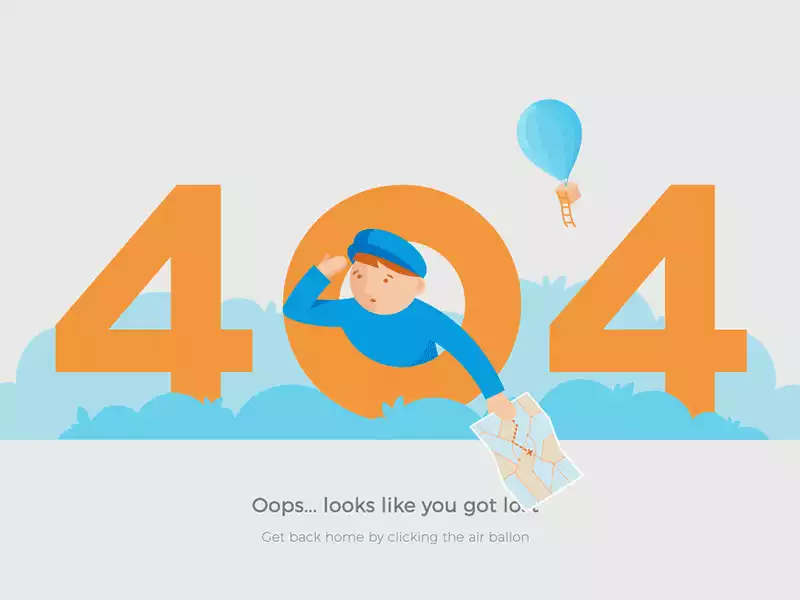

<!-- Not Found
<div class="row">
  <div class="col-6"></div>
  <div class="col-6">
    <h1>
      404
    </h1>
  </div>
</div> -->

<main>
  <div class="container mt-5 d-flex " style="height: 1100px;">
    <div class="row pt-5">
      <div class="col-md-6 align-self-center">
        

      </div>
      <div class="col-md-6 align-self-center mt-2">
        <h1>404</h1>
        <h2>UH OH! You're lost.</h2>
        <p>Explanation: The server says this is a
          "404" error, which means everything is working but the page you were looking for just isn't there. the page you are looking for
          might have been removed, had its name changed, It may be that the link you followed is outdated or it may have been spelled wrong. to see more click on Site Map

          Solution: You have several options to find the page you are looking for:

          1. If you were looking for a page on a particular topic, your best option is probably to use search in the entire Site Map link or search box to enter some key words. You should see it at the top of the sidebar

          2.  Failing this if it was a recent article, you might still find it on the homepage or listed to the right in the sidebar

          3. If you're not having much luck but really want to find something you're sure should be there, make Contact and I'll do my best to help.


        </p>
        <button class="btn link404" routerLink="/">HOME</button>
      </div>
    </div>
  </div>
</main>
